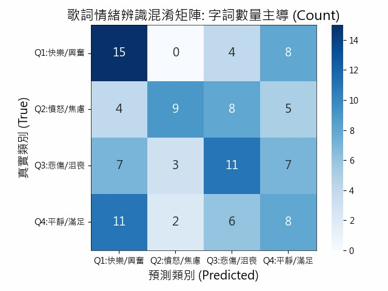
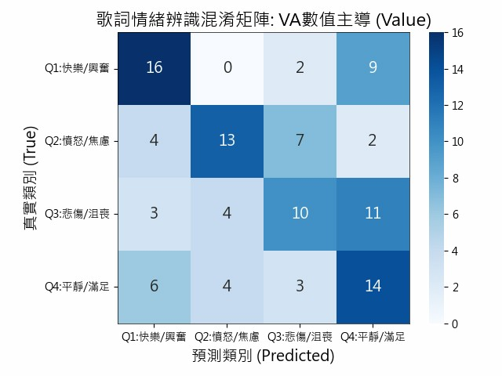

詞典法
這個模型採用情緒詞典法來進行情緒分析，核心概念是將歌詞中的詞彙， 對應到事先定義好的情緒詞典，再透過數值平均或情緒字詞數量， 判斷整段文字的整體情緒狀態。
在實際分析時，模型會先對歌詞進行斷詞，接著逐詞查詢情緒詞典， 最後將所有詞的情緒資訊進行加總、平均，作為整體情緒判斷的依據。
情緒詞典資料範例
在情緒詞典中，每一個詞都會有 Valence 與 Arousal， 透過字詞的 Valence 與 Arousal，我們可以將情緒投影到四個象限中。
四個象限分別是Q1快樂（High Valence / High Arousal）、Q2憤怒（Low Valence / High Arousal）、Q3悲傷（Low Valence / Low Arousal）、Q4平靜（High Valence / Low Arousal）
| Text | Valence_Mean | Arousal_Mean | Emotion | New_Emotion |
|---|---|---|---|---|
| 不慎 | -1.9 | 0.6 | Q2:憤怒/焦慮 | Q2:憤怒/焦慮 |
| 不懈 | 0.8 | -0.4 | Q4:平靜/滿足 | Q4:平靜/滿足 |
| 不應該 | -1 | 0 | Q3:悲傷/沮喪 | Q3:悲傷/沮喪 |
| 不懷好意 | -1.3 | -0.5 | Q3:悲傷/沮喪 | Q3:悲傷/沮喪 |
| 不堪 | 0.4 | 0.3 | Q1:快樂/興奮 | Q1:快樂/興奮 |
| 不成 | -1.2 | -1.6 | Q3:悲傷/沮喪 | Q3:悲傷/沮喪 |
| 不成功 | -1.5 | -1.6 | Q3:悲傷/沮喪 | Q3:悲傷/沮喪 |
詞典法【情緒類別】
此圖為以字詞數量為主導的混淆矩陣，橫軸為預測類別（Predicted），縱軸為實際類別（True），對角線上的數值代表預測正確的樣本數。
四象限預測正確數量:
Q1： 15筆
Q2： 9筆
Q3： 11筆
Q4： 8筆
- 總樣本數：108
- 預測正確筆數：43
- 成功機率：39.81%

圖1、字詞數量主導的混淆矩陣
Q1（快樂／興奮):顯示出「正向且高激起」的特徵在詞頻統計上相對明顯。
Q2（憤怒／焦慮):能辨識出負向情緒，但常與Q3產生混淆，表示在處理「負向且高激起」情緒時，容易抓不到情緒強度導致誤判。
Q3（悲傷／沮喪):顯示出「負向且低激起」的特徵在數量上有一定的辨識基準。
Q4（平靜／滿足):顯示出「正向且低激起」說明在單純計數的方法下，特徵極易被其他類別掩蓋。
整體而言，模型在Valence（情緒正負向）判斷較穩定，但在Arousal（情緒強度）上容易混淆，特別是在相鄰象限之間（Q1↔Q4、Q2↔Q3）。
詞典法【VA值】
此圖為以 Valence-Arousal（VA）數值為主導的混淆矩陣。
四象限預測正確數量:
Q1： 16筆
Q2： 13筆
Q3： 10筆
Q4： 14筆
- 總樣本數：108
- 預測正確筆數：53
- 成功機率：49.07%

Q1（快樂／興奮):顯示出「正向且高激起」的特徵具有極強的鎖定能力，顯示此類歌詞在數值特徵上最為鮮明且不具歧義。
Q2（憤怒／焦慮):能捕捉到部分負向情緒的特徵，但其辨識力極不穩定。這反映出在僅依賴「數值加權」的邏輯下，歌詞中的「低能量負向情緒」（如：消極、失落、無力感）往往缺乏足夠強烈的關鍵詞權重，導致其在數值座標軸上容易偏離原有的負向區間。
Q3（悲傷／沮喪):顯示出「負向且低激起」的特徵在數量上有一定的辨識基準。
Q4（平靜／滿足):能有效識別低激起的正向情緒，說明數值權重法對於捕捉溫和、正面的語境具有穩定效果。
整體而言，模型在Valence（情緒正負向）判斷較穩定，但在Arousal（情緒強度）上容易混淆，特別是在相鄰象限之間（Q1↔Q4、Q2↔Q3）。